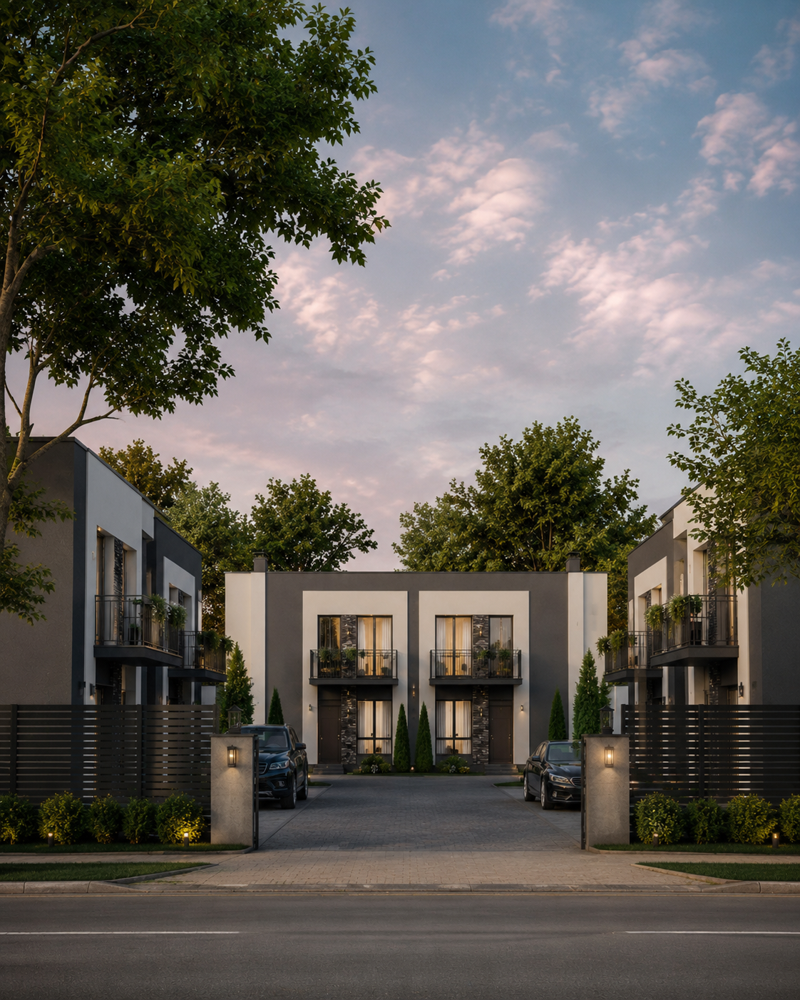

РАБОТАЛИ С ДЕВЕЛОПЕРОМ КОТТЕДЖНОГО ГОРОДКА / REAL ESTATE / УКРАИНА
Комплексный запуск
девелоперского проекта
в Киевской области.
Клиент пришёл на старте: не было стратегии, сайта, рекламы, аналитики и системы обработки лидов. RESET собрал основу для выхода проекта на рынок.
Сайт
Google Ads
GA4
GTM
CRM
